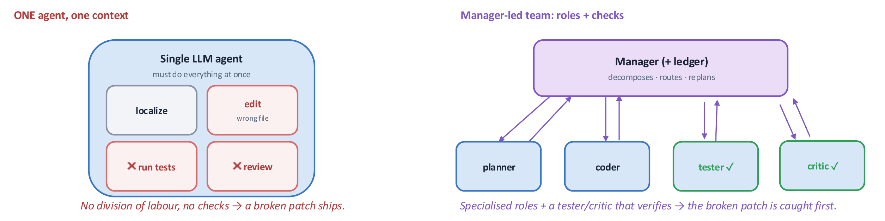
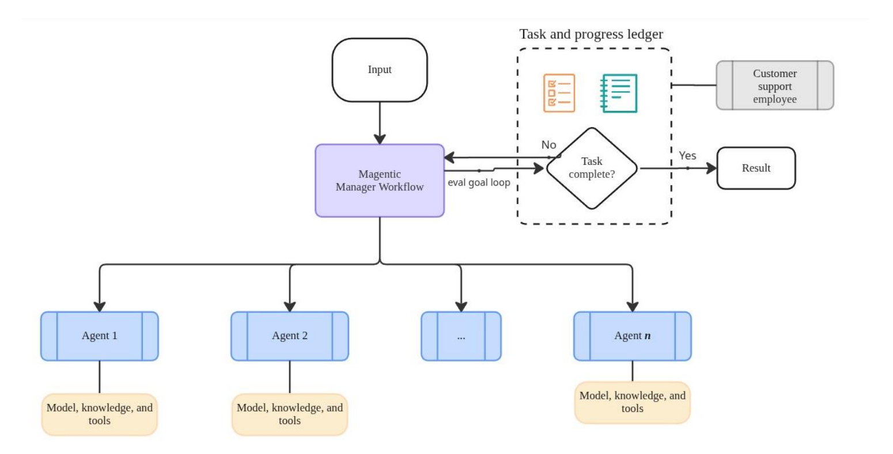
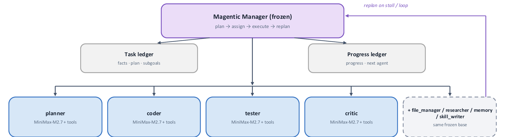
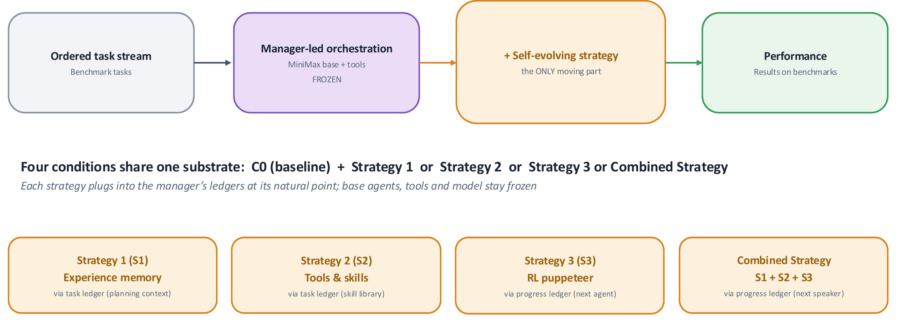
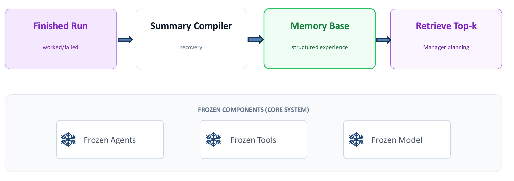
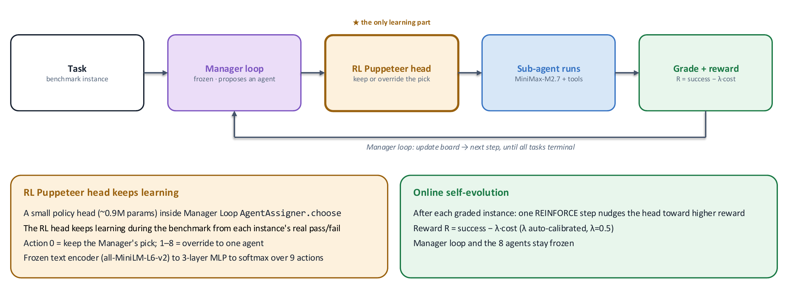
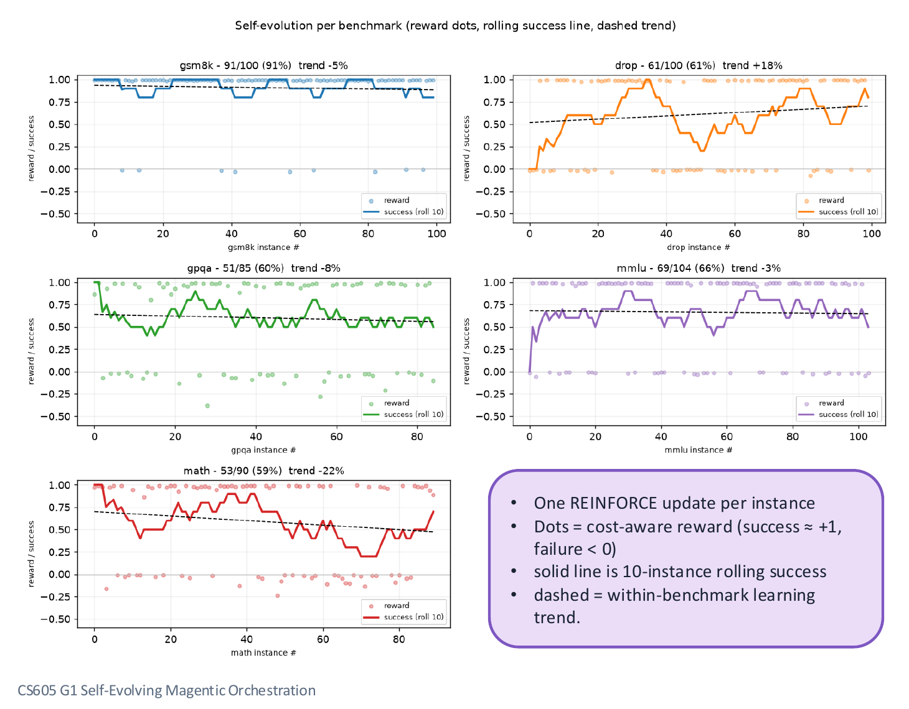
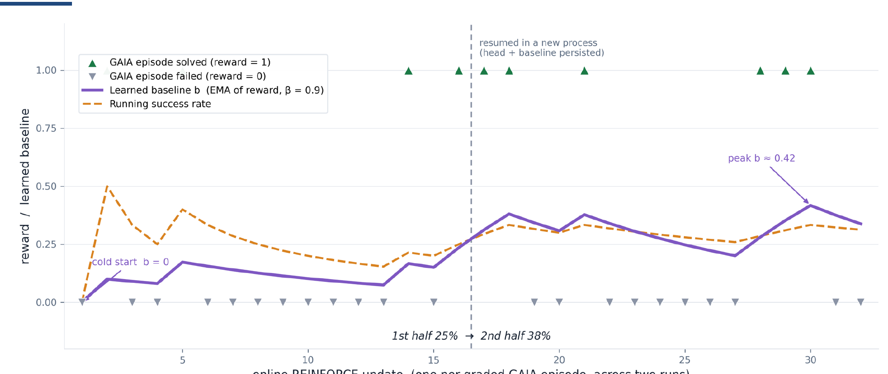
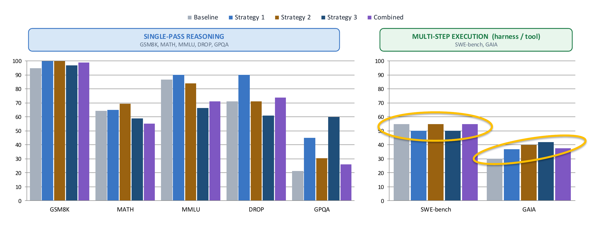

The problem
A single LLM agent only produces text — it can't check its own work. Ask one model to localize a bug, edit the file, run the tests, and review the result, and there's no division of labour: a broken patch ships because nothing catches it. Orchestration splits those jobs across specialized roles with a manager that decomposes, routes, and replans — and critically, a tester and critic that verify before anything counts as done.

- Orchestration produces actions, not just text. A single model answers; a team of agents executes, verifies, and recovers.
- Hard tasks don't fit in one context. Long-horizon work needs memory and re-planning across steps, not one pass.
- Specialization is engineerable. Prompts, tools, memory, planning, and evaluation each become a part of the stack that can be versioned and improved on its own.
Magentic orchestration, and where it stops
Magentic-One is a generalist multi-agent framework Microsoft released in 2024, designed to sit between two failure modes: leaving control entirely to the model (early CrewAI) and rigidly hard-coding the engineering flow (LangGraph). A manager workflow decomposes a task, assigns it across however many agents are registered, and checks a task-and-progress ledger before deciding whether to keep going or return a result.

What it doesn't do is learn from having run before — it adapts dynamically within a task via the ledger, but the manager, the agents, and the underlying model are exactly the same on run one and run one thousand. That's the gap this project investigates: can the orchestration itself evolve without retraining anything underneath it?
Our baseline
Everything in the baseline is frozen across tasks — tools, prompt skeleton, decoding. The base model is MiniMax-M2.7, run through LangChain, with 8 specialized subagents (planner, coder, tester, critic, plus file_manager / researcher / memory / skill_writer) implemented on AgentOS for durable state. Every self-evolution strategy below plugs into this same frozen substrate, so any difference in results is attributable to the strategy, not to a different base system.

Three strategies, one substrate
The design principle: hold everything fixed except the one thing being tested. Four conditions share the identical frozen manager, agents, tools, and base model — they differ only in which self-evolving strategy, if any, is layered on top, and each plugs into the manager's ledgers at a different natural seam.

My part was building the Magentic orchestration layer and running the baseline evaluations every strategy below is measured against; each of the three strategies was led by a different teammate on the team.
Benchmarks
Seven public benchmarks split across single-pass reasoning (GSM8K, MATH, MMLU, GPQA, DROP) and multi-step execution (SWE-bench, GAIA) — each sampled for a mix of hard and easy instances rather than an arbitrary slice.
Baseline scores
Same evaluation protocol as Magentic-One's original benchmarks, re-run on our frozen MiniMax-M2.7 baseline — the row every strategy below is measured against.
| Benchmark | Score |
|---|---|
| GSM8K | 95.0 |
| MATH | 64.3 |
| MMLU | 86.8 |
| GPQA | 21.2 |
| DROP | 71.0 |
| SWE-Bench | 55.0 |
| GAIA | 30.0 |
Strategy 1 — memory from experience
A finished run gets compiled into a compact, structured summary — not the raw dialogue log — and stored in a memory base. The manager retrieves the top-k most relevant summaries into its planning context on future runs. Agents, tools, and the base model stay completely frozen; only the manager's planning context changes.

Verified before measuring
Before trusting any performance number, the mechanism itself was checked end-to-end: memory gets compiled, stored, retrieved, and injected in the real manager loop, not just in isolated unit tests.
Relevant memory improves success
On a SWE-bench slice, applying relevant memory took end-task success from 25% to 100% — while also cutting retries (2.58 → 1.00 steps/task) and cost (2372 → 1285 tokens/task).
| Condition | Success | Routing | Tokens |
|---|---|---|---|
| C0 (baseline) | 25% | 17% | 2372 |
| Random memory | 79% | 71% | 1929 |
| S1 summary | 100% | 100% | 1285 |
| Raw dialogue log | 100% | 88% | 2777 |
Strategy 1 vs. baseline
| Benchmark | Baseline | Strategy 1 |
|---|---|---|
| GSM8K | 95.0 | 100 |
| MATH | 64.3 | 65.0 |
| MMLU | 86.8 | 90.0 |
| GPQA | 21.2 | 45.0 |
| DROP | 71.0 | 90.0 |
| SWE-Bench | 55.0 | 50.0 |
| GAIA | 30.0 | 36.8 |
Best gain: GPQA +23.8. Largest drop: SWE-bench −5.0.
Strategy 2 — tool & skill library
The framing borrows from cognitive science: semantic memory (facts) maps to RAG, episodic memory (experience) maps to interaction logs — Strategy 1's territory — and procedural memory (skills, "how to do things") maps to an executable skill library, a folder of markdown files each describing when to use a skill, its workflow, its tools, and its output format.
Definitions
- Tool. An external function, API, or program an agent calls for one specific operation beyond its native reasoning.
- Skill. A reusable, higher-level capability packaging instructions, tool usage, workflow logic, and success criteria for a whole class of tasks.
How it evolves
Retrieve an active skill → execute → fall back to normal agents if it fails → the Skill Librarian decides noop / refine / create → tests and critic gate activation.
![Strategy 2 flow: Manager Agent tries an active executable skill via a Retriever + Runner before normal routing; failed or N/A results fall back to normal agents (planner/coder/tester/critic); completed results and fallback experience feed a Skill Librarian (noop/refine/create), which a Coder compiles and a Validate+Critic step gates (AST + tests + score ≥0.8) before activating or deprecating it in the Executable Skill Library (manifest.json, skill.py, tests.json, skill.md, stats.json, experience.jsonl)](../img/magentic/s2-flow.png)
This builds on a line of prior work: agents that generate and cache reusable tool code (LATM, Cai et al. 2023), that separate abstract skill creation from concrete execution (CREATOR, Qian et al. 2023), that refine executable skills over a lifetime of tasks (Voyager, Wang et al. 2023), and that manage a skill's full lifecycle — create, remember, evaluate, refine, transfer (MUSE-Autoskill, Lin et al. 2026).
Strategy 2 vs. baseline
| Benchmark | Baseline | Strategy 2 |
|---|---|---|
| GSM8K | 95.0 | 100 |
| MATH | 64.3 | 69.4 |
| MMLU | 86.8 | 83.9 |
| GPQA | 21.2 | 30.6 |
| DROP | 71.0 | 71.0 |
| SWE-Bench | 55.0 | 55.0 |
| GAIA | 30.0 | 40.0 |
Best gain: GAIA +10.0. Largest drop: MMLU −2.9.
Strategy 3 — RL puppeteer over routing
A small trainable policy head (~0.9M params, a 3-layer MLP over a frozen text-encoder embedding of the current state) sits at exactly one seam: after the frozen manager proposes which agent should act next, the head decides whether to keep that pick or override it. Everything else — the manager loop, the 8 agents, the base model — stays frozen; this is the only part that learns.

It learns online: after every graded instance, one REINFORCE update (with an EMA baseline) nudges the head toward whatever choice beat its running average reward, where reward is R = success − λ·cost, λ auto-calibrated from the observed median cost.
![Four definition cards: State (the run snapshot at each agent assignment — task ledger goal/description, progress ledger iteration count, last few results); Action (9 discrete choices — 0 = follow manager's proposal, 1-8 = override to a specific agent, guarded so an override only applies to a registered, not-yet-failed agent); Policy (a stochastic 3-layer MLP over a 1154-dimension state, ~0.9M trainable parameters, frozen MiniLM text encoder); Reward (one terminal score per instance, R = success minus lambda times cost minus rho times steps, updated via REINFORCE with an EMA baseline)](../img/magentic/s3-loop-detail.png)
Online self-evolution, benchmark by benchmark
Base capability lands between 59–91% (GSM8K 91, MMLU 66, DROP 61, GPQA 60, MATH 59). The clearest online-learning signal is on DROP (+18% trend) — benchmarks already near ceiling (GSM8K, MMLU, GPQA) stay flat, within noise, since there's little headroom left to climb on a binary success signal. MATH's −22% trend is more likely instance-ordering (harder tasks arriving later in the stream) than genuine policy decay.

Strategy 3 vs. baseline
| Benchmark | Baseline | Strategy 3 |
|---|---|---|
| GSM8K | 95.0 | 97.0 |
| MATH | 64.3 | 58.9 |
| MMLU | 86.8 | 66.3 |
| GPQA | 21.2 | 60.0 |
| DROP | 71.0 | 61.0 |
| SWE-Bench | 55.0 | 50.0 |
| GAIA | 30.0 | 42.1 |
Best gain: GPQA +38.8 — the single largest gain of any strategy on any benchmark. Largest drop: MMLU −20.5.
Combined strategy
All three strategies layered onto the same frozen manager loop: try an active executable skill first (score ≥ 60), otherwise route through an experience-enriched planning prompt, then let the RL head optionally re-route the pick. Manager, agents, tools, and base model stay frozen throughout — S1's experience base, S2's skill library, and S3's policy head are the only three moving parts.
![Combined strategy flow: frozen Magentic Manager loop feeds an S2 skill retriever+runner, then S1+S3 routing (EvolvingAssigner.choose, where S1 experience enriches the planning prompt and the S3 head may override the pick), then out to the 8-agent roster (coder, memory, +6 more). Frozen: manager, 8 sub-agents, tools, base model. Evolving: S1 shared experience base, S2 project-local skill library, S3 puppeteer policy head. Note: S2 is off for repo/web tasks since it cannot edit a repo. Workflow: task from the stream, S2 skill cache, S1+S3 route, sub-agent runs execute+verify, grade+cost.](../img/magentic/combined-flow.png)
On a 20-task GAIA subset, the learned baseline climbs from a cold start of 0 to a peak ≈ 0.42, then tracks the run's true ~31% solve rate — and critically, it persists: resuming in a fresh process picks up at b ≈ 0.31, not back at 0, because the head's weights, optimizer, and baseline are checkpointed. Solve rate rose from 25% in the first half of the run to 38% in the second.

Combined vs. baseline
| Benchmark | Baseline | Combined |
|---|---|---|
| GSM8K | 95.0 | 99.0 |
| MATH | 64.3 | 55.1 |
| MMLU | 86.8 | 71.0 |
| GPQA | 21.2 | 25.9 |
| DROP | 71.0 | 74.0 |
| SWE-Bench | 55.0 | 55.0 |
| GAIA | 30.0 | 37.5 |
Best gain: GAIA +7.5. Largest drop: MMLU −15.8.
Overall results
Splitting the seven benchmarks into single-pass reasoning (GSM8K, MATH, MMLU, DROP, GPQA) and multi-step execution (SWE-bench, GAIA) makes the pattern clear: every strategy's story is different depending on which kind of task it's facing.

| Benchmark | Baseline | S1 | S2 | S3 | Combined |
|---|---|---|---|---|---|
| GSM8K | 95.0 | 100 | 100 | 97.0 | 99.0 |
| MATH | 64.3 | 65.0 | 69.4 | 58.9 | 55.1 |
| MMLU | 86.8 | 90.0 | 83.9 | 66.3 | 71.0 |
| GPQA | 21.2 | 45.0 | 30.6 | 60.0 | 25.9 |
| DROP | 71.0 | 90.0 | 71.0 | 61.0 | 74.0 |
| SWE-Bench | 55.0 | 50.0 | 55.0 | 50.0 | 55.0 |
| GAIA | 30.0 | 36.8 | 40.0 | 42.1 | 37.5 |
Mechanism vs. adaptivity trade-off
| Strategy | What it changes | Where it helps | Trade-off |
|---|---|---|---|
| S1 Memory | Compiles past-task summaries into the planning prompt; solver & routing unchanged | Reasoning, broadly (DROP +19, GPQA +24, MMLU +3) | Almost none (SWE-bench −5) |
| S2 Skills | Runs a learned skill (score ≥60) before routing; ≤1 new skill/run | Reusable compute patterns (GSM8K +5, MATH +5, GAIA +10) | Narrow (MMLU −3; flat DROP & SWE-bench) |
| S3 RL routing | Trained head overrides the sub-agent pick each step, learning online | Multi-step execution (GAIA +12, best of any strategy) | Heavy reasoning tax (MMLU −20, DROP −10, MATH −5) |
| Combined | All three on one frozen manager: skill first, then enriched prompt, then optional re-route | Execution peak (DROP +3, GPQA +4, GAIA +7.5) | Inherits S3's tax (MMLU −16, MATH −9) |
Key takeaways
- Memory is the cheapest, most general self-evolution strategy. It improves reasoning broadly with almost no downside.
- Adaptivity is a trade-off, not a free upgrade. RL routing drives the largest agentic/tool gains (GAIA +12.1, best of all conditions) but taxes single-pass reasoning (MMLU −20).
- Combining strategies is targeted, not universally better. The combined stack tops the agentic benchmark yet still inherits the reasoning tax that comes with changing who executes.
- What's next. Scaling the benchmark set and reporting confidence intervals, and trying ensemble methods to find the best self-evolving combination rather than a single fixed recipe.